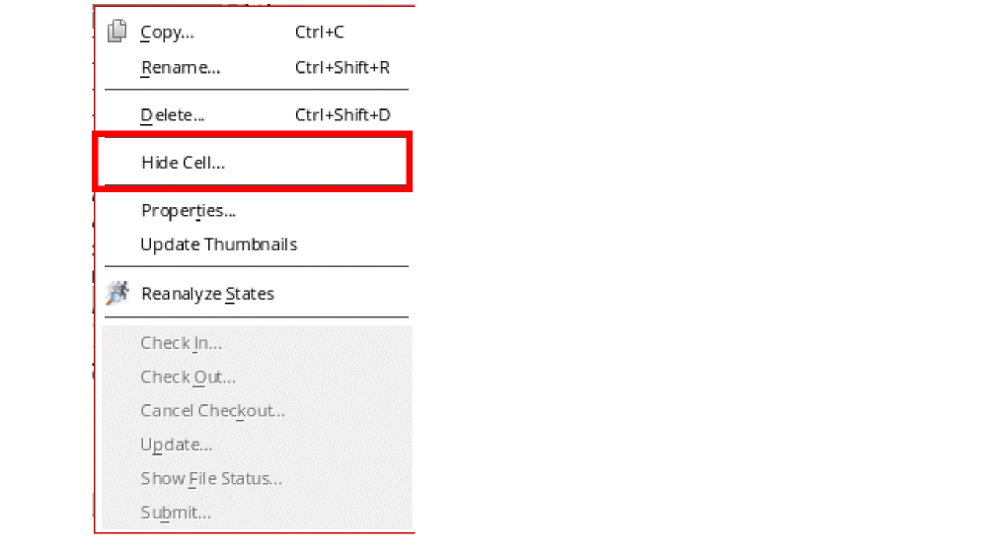

2
Working with Libraries
This chapter covers the following topics:
- Opening the Library Path Editor
- Opening a Cellview
- Creating a New Cellview
- Using the Filter and Search Options
- Refreshing the View and Data
- Viewing the Current Cellview Status
- Renaming Libraries
- Renaming Cells
- Renaming Views
- Renaming Files
- Renaming Design-Managed Objects
- Renaming Reference Libraries
- Deleting a Library
- Deleting a Cell
- Deleting a View
- Deleting Cells Using Filters
- Deleting Library or Cell Files
- Hiding a Cell
- Showing Hidden Cells
- Working with Text Cellviews
- Editing Properties
- Adding Properties
- Modifying Properties
- Updating Managed Files
- Customizing Library Display Settings
- Overriding Customized Library Display Settings
-
Creating Combined LibrariesThe Library Manager only lets you edit and manage OpenAccess libraries. You need to convert a CDB library to OpenAccess before you can use it with the Library Manager. Contact Cadence Customer Support to discuss how to migrate CDB data to OpenAccess.
A CDB library has a library-levelprop.xxfile. Such libraries are grayed-out in the Library Manager and their contents are not displayed. None of the Library Manager commands can be used on the library. For example, you cannot copy the library or delete it. Cell-levelprop.xxfiles are also grayed out. Library Manager commands cannot be used on these files. When you copy libraries or cells, theprop.xxfile is not copied. Copy commands can also fail if you haveprop.xxfiles.
Opening the Library Path Editor
To open the Library Path Editor, do the following:
- Open the Library Manager (see “Opening the Library Manager”).
-
Choose Edit – Library Path.
The Library Path Editor form appears.
The cds.lib file, which defines the location of the reference and design libraries you want to use in your design.
Opening a Cellview
To open a cellview, follow these steps:
-
In the CIW, choose Tools – Library Manager.
Libraries defined in yourcds.libfile and the default technology library cdsDefTechLib appear on the Library Manager form. -
In the Library list box, choose a library name.
The cells in the selected library appear in the Cell list box. -
Select Show Categories.
The Category list box appears between the Library and Cell list boxes.
The Category list box displays the default categories (Everything and Uncategorized) plus any categories you have added to this library. By default, the Everything category is selected. -
Highlight the category name.
The category name is highlighted. The cells included in that category appear in the Cell list box. Hidden cells do not appear in the list. See Hiding a Cell for more information. -
Choose a cell name.
The cell name is highlighted. The views associated with the cell appear in the View list box.
-
Choose the view name of the cellview you want to open.
The view name is highlighted. -
Choose File – Open or File – Open (Read-Only).
The Library Manager opens the selected cellview. In this context, see also cdsLibManager.open windowBehavior.
Creating a New Cellview
To create a new cellview, follow these steps:
-
Open the Library Manager.
-
Choose File – New – Cell View. Alternatively, you can click inside the Cell or View list box and press
Ctrl+Non the keyboard.
The New File form is displayed.
See also “New File Form”.You can also type the name of the cell in the Cell field and pressCtrl+Nto open the New File form. In this case, the Cell field in the New File form is automatically populated with the name that you have entered in the Cell field of the Library Manager form. - In the Library drop-down list, choose the name of the library in which you want to create a new cellview.
-
In the Cell field, type a cell name for the new cellview.
You can set the maximum cell name length allowed by using theCDS_MAX_CELL_NAME_LENGTHenvironment variable. - In the View field, type a view name for the new cellview.
- In the Type drop-down list, choose the type of view to be opened.
- In the Application section, select the application that should be invoked to display this type of selected cellview.
- (Optionally) check to always open this application when the selected view type is opened.
- Click OK.
The new cellview appears in a window of the specified product.
Using the Filter and Search Options
In the Library Manager window, the Filter combo box and the Select and search field are provided at the top of the Library, Cell, and View list boxes. Use the Filter combo box to specify a filter pattern and accordingly display only a subset of libraries, cells, or views. The Search and select field lets you search and select a particular library, cell, or view by specifying a search string.
Using the Filter Combo Box
The Filter combo box supports use of patterns containing wildcard characters or regular expressions in the specified input. Use of wildcard characters is the preferred and recommended mode of specifying filter patterns. It provides to you advantages that are similar to filtering a list of files from a directory. For example, if you specify *Lib*, the corresponding items, such as Lib1, Lib2, and Mylib, will be displayed.
To apply filters, specify a filter pattern in the Filter combo box and press the Enter or Tab key. However, if the Wildcard option is selected, there is no need to press the Enter or Tab key. In this case, when you pause, the filter pattern is applied and the Library, Cell, or View list box is updated dynamically.
Pressing the Enter or Tab key applies the filter pattern and saves it to the Filter history list. If you press the Tab key, the cursor moves to the Search and select field below the Filter combo box.
You can set the filter criteria by selecting the required options from the filter options menu, as shown below.
Filter With
The options under Filter With let you filter the instances based on one or more specified patterns, as follows:
-
All Of The Words: Sets the filters to display the items that contain all the specified words. For example, if you specify
Ana**cell(separated by space), the corresponding item such asAnalog_res_cellwill be displayed in the list box. -
Any Of The Words (default): Sets the filters to display all items that have at least one of the specified words. For example, if you specify the filter pattern
*mos*, all the corresponding items, such asnmos,pmos_hiVT, andDMOS, will be displayed in the list box. -
None Of The Words: Sets the filter by specifying the filter pattern that you want to exclude from the list box. For example, if you specify
mos, it will exclude all the items, such asmos,Mos, andMOS; whereas,pmoswill not be excluded.
Using Case
The options under Using Case let you determine whether the filter results must be case sensitive (Sensitive Match) or any text case is acceptable (Insensitive Match).
-
Insensitive Match: Sets the filter to display a subset of items, irrespective of casing. For example, if you specify the text string
*mos, all the corresponding items, such asNmosandCMOS, will be displayed in the list box. -
Sensitive Match (default): Sets the filter to display a subset of items with the exact casing. For example, if you specify the text string
*mos, only the lowercase items such as,NmosandCmos, will be displayed in the list box.
Match Syntax
The options under Match Syntax let you choose the syntax that is used to interpret a pattern filter.
-
Wildcard (default): Sets the filter by specifying an item using the following wildcard characters:
-
*(asterisk): Matches zero or more characters. For example, if you specifymos*, all the corresponding items starting withmossuch as,mos_tandMos_hiVT, will be displayed in the list box. -
?(question mark): Matches any single character. For example, if you specifymos?, only the items followed by a single character such as,mos1andMos2, will be displayed. -
[](square brackets): Represents a set of characters enclosed within the square brackets. For example, if you want to filter the items starting withaorAand containing the substringnalog, specify[aA]nalogas a search string. It will display the matching items, such asanalogandAnalog. -
\(backslash): Escapes any wildcard character. For example, if you want to filter out the results containing “*” (asterisk), you need to add “\” (backslash) before the “*” symbol. For example, if you specifymy\*cell*, all corresponding items, such asmy*cellandmy*cellA, will be displayed in the list box.
-
-
Regular Expressions: Sets the filter to use regular expressions to interpret the meaning of a pattern. Following are some examples:
-
.(dot): If you specifysa.ple, it matches a single character and the corresponding item such assamplewill be displayed in the list box. -
.*(dot and asterisk): If you specifymos.*, all the corresponding items, such asmos_t,mosA, andMos_hiVT, will be displayed in the list box. -
\(backslash): If you want to filter out the results containing “*” (asterisk), add “\” (backslash) before the “*” symbol. For example, if you specifymy\*cell*, all corresponding items, such asmy*cellandmy*cellA, will be displayed in the list box. -
^(caret): If you want to filter the items starting withcds, specify^cds. It will display all the items, such ascdsDefTechLib,cdsDefLibTechview, andcdslibtechView. -
$(dollar): If you want to filter the items ending withLib, specify.*Lib$. It will display all the items, such asanalogLibandcdsLib, in the list box. -
[](square brackets): If you specifyLib[1-3], it will display all the corresponding items, such asLib1,Lib2, andLib3, in the list box. -
|(pipe): If you want to filter all the items starting withLiborcds, specifyLib.*|cds.*. It will display all the items, such asLib1,Lib2, andcdsLib. -
[^](caret in square brackets): If you want to filter all the items starting withLiband want to exclude the items containing3, specify^Lib[^3]*. It will display all the items, such asLib1,Lib2, andLibmgr, exceptLib3.
-
Some important points to remember:
-
To record the history of previously applied filter patterns, press the Enter or Tab key after specifying the text in the Filter combo box. The history of previously filtered items is saved at the following location:
$CWD/.cadence/<userID>/libManager - To view the history of previously applied filter patterns, click the drop-down button of the Library, Cell, or View combo box. It will display the list of filter pattern history from where you can reapply any of the filters.
- The drop-down list maintains a list of the last 50 filtered patterns. The history is valid for all subsequent Virtuoso sessions.
By View Names
This section is included only in the Views filter options menu.
- Filter Cells by View Names: Sets the filter to display only those cells that match the filtered views. It is not selected by default.
Using the Search Option
To search for a specific library, cell, or view, specify a text string in the respective Search and select field. To select the instance, press the Enter or Tab key.
Match Name
The options under Match Name allow you to search for an instance either by specifying a substring or a prefix.
-
Substring: Searches the first instance in the list box that contains the specified text string. For example, if you specify
mos, theNmosinstance will be selected in the list box. -
Prefix (default): Searches the first instance in the list box that starts with the specified text string. For example, if you specify
mos, themosViewinstance will be selected in the list box.
Using Case
The options under Using Case let you determine whether search results must be case sensitive (Sensitive Match) or any text case is acceptable (Insensitive Match).
-
Insensitive Match: Searches the first instance in the list box irrespective of casing. For example, if you specify the text string
mos, theMosinstance will be selected in the list box. -
Sensitive Match (default): Searches the first instance with the exact casing. For example, if you specify the text string
mos, only the lowercase items, such asNmosorCmos, will be selected in the list box and items likeCMOSwill not be matched.
Once you set the filter in the List mode, the Tree mode will only display the items matching the filter criteria.
To view the results in the Tree mode, select View – Tree. In this mode:
- When you choose a library, only the libraries matching your filter string appear in the expanded branch.
- When you choose a cell, only the cells matching your filter string appear in the expanded branch.
- When you choose a view, only the views matching your filter string appear in the expanded branch.
Refreshing the View and Data
To refresh the view, do the following:
-
Choose View – Refresh in the Library Manager window.
By default, all modified libraries appear selected. If a cellview is opened in the edit mode, the corresponding entry will not be listed. -
Deselect any libraries that you do not want to update in the view and click OK.
The selected libraries are reloaded from the library definitions.
To refresh design data, technology files, and CDF data in the current session, do the following:
-
Select File – Refresh in the Virtuoso Command Interpreter Window (CIW).
If there is no new data to refresh, an appropriate message appears.
Viewing the Current Cellview Status
To view the current cellview status:
The lists in the window are reloaded with icons next to names. The icons indicate whether a library, cell, or view is opened in read mode (green icon ) or edit mode (red icon ).
You can click the toggle button Show open cellviews in use to hide the status icon indicators.
Renaming Libraries
To rename a library, follow these steps:
- Open the Library Manager (see “Opening the Library Manager”).
-
Select the library you want to rename.
Make sure no cell name or view name is selected. To deselect all cells and views, right-click in the Library list box.
To set preferences for Edit – Copy and Edit – Rename, see “Setting Copy and Rename Preferences”. -
Choose Edit – Rename.
The Rename Library form appears (see “Rename Library Form”).
The name of the selected library appears in the From Library field. The Update Instances check box is selected by default.
-
When Update Instances is selected, the Library Manager replaces all instances by the name in the From Library field with the name in the To Library field.
For example, with Update Instances selected, an instance of…/projectLib/iopin/symbolis renamed to…/myLib/iopin/symbol. (All instances ofprojectLibare changed tomyLib.) -
When Update Instances is unselected, the software leaves references to the From Library name unchanged.
If you renameprojectLibtomyLibwith Update Instances unselected, instances of…/projectLib/iopin/symbol(for example) remain the same such that they become unbound instances unless you replace theprojectLiblibrary.
-
When Update Instances is selected, the Library Manager replaces all instances by the name in the From Library field with the name in the To Library field.
-
In the To Library field, type a new name for the library.
- Click OK.
The system changes the name of the selected library (From Library) to the new name (To Library).
tech.db file, the source library's tech.db is not copied. Otherwise, while copying a source library to an existing library, the tech.db file associated with the source library will also be copied to the destination library.If you are working with a design-managed library, the Rename Library dialog box shows an additional section. For information, see Renaming Design-Managed Objects.
Renaming Cells
To rename a cell, follow these steps:
-
Select the cell you want to rename.
Make sure no view name is selected. (If you are in View – Lists mode, you can deselect all views by right-clicking in the Cell list box.) -
Choose Edit – Rename.
The Rename Cell form appears (see “Rename Cell Form”).
The name of the selected cell appears in the From Cell field.If the selected cell is a combined cell, the Edit – Rename command is not available. See “Creating Combined Libraries” for more information. -
In the To Cell field, type the new name for the cell.
The cell name cannot duplicate an existing cell name in the library.
You can set the maximum cell name length allowed by using theCDS_MAX_CELL_NAME_LENGTHenvironment variable. -
(Optional) Deselect Update Instances.
- When Update Instances is selected (the default), the Library Manager replaces all instances having the From Cell name with the To Cell name.
- When Update Instances is unselected, the Library Manager keeps references to the From Cell name such that all placed instances of the From Cell continue to reference that name: Instances using the old (From Cell) name are unbound instances unless you replace them with the new (To Cell) cell.
- Click OK.
The Library Manager changes the name of the selected cell (From Cell) to the new name (To Cell).
If you are working with a design-managed cell, the Rename Cell dialog box shows an additional section. For information, see Renaming Design-Managed Objects.
Renaming Views
To rename a view, follow these steps:
- Select the view you want to rename.
-
Choose Edit – Rename.
The Rename View form appears (see “Rename View Form”).
The name of the view you selected appears in the From View field. The entire cellview path appears in the title banner of the form.
-
In the To View field, type the new name for the view.
The new view name cannot duplicate an existing view name for the cell. -
(Optional) Deselct Update Instances.
-
When Update Instances is selected, the Library Manager overwrites any occurrences of the From View name with the To View name.
If you renamesymboltosymbolA(for example), all instances of…/projectLib/buff/symbolare changed to…/projectLib/buff/symbolA. -
When Update Instances is unselected, the Library Manager keeps references to the From View name.
If you renamesymboltosymbolAwith Update Instances unselected, instances of…/projectLib/buff/symbol(for example) remain the same such that they become unbound instances unless you replace thesymbolview.
-
When Update Instances is selected, the Library Manager overwrites any occurrences of the From View name with the To View name.
- Click OK.
The Library Manager changes the name of the selected view (From View) to the new name (To View).
If you are working with a design-managed view, the Rename View dialog box shows an additional section. For information, see Renaming Design-Managed Objects.
Renaming Files
To rename a file, follow these steps:
- Depending on your viewing mode (see “Changing How You View Library Information”), do one of the following:
- Select the file you want to rename.
-
Choose Edit – Rename.
The Rename File form appears (see “Rename File Form”). The name of the file you selected appears in the From File field.
-
In the To File field, type the new name for the file.
The new file name cannot duplicate an existing file name in the library. - Click OK.
The Library Manager changes the name of the selected file (From File) to the new name (To File).
If you are working with a design-managed file, the Rename Cell File dialog box shows an additional section. For information, see Renaming Design-Managed Objects.
Renaming Design-Managed Objects
If you are working with a design-managed (DM) system, the Rename dialog box for libraries, cells, views, and files shows an additional section. The options appear enabled only when the DM system supports renaming.
You can rename libraries, cells, views and files for libraries and cells, preserving their history.
Renaming Reference Libraries
You can change the reference library for instances in your design library. For example, if your design library, newLib, contains via cells from the reference library basic, you can change the reference library from the basic library to the analogLib library so that the via cells, and any other cells in your design library that reference the basic library, now reference the analogLib library. This assumes that the analogLib library contains a via cell.
To change a reference library for a design library, follow these steps:
- Select the library that contains references you want to rename.
-
Choose Edit – Rename Reference Library.
The Rename Reference Library form appears (see “Rename Reference Library Form”).

-
In the In Library drop-down list, select or type the name of the design library that uses a reference library whose name you want to change.See “Using Drop-down List” for information about using drop-down list.
- In the From Library drop-down list, select or type the name of the current reference library.
- In the To Library drop-down list, select or type the name of the new reference library.
- Click OK to save the changes and close the Rename Reference Library form.
The system changes the name of the current reference library to the name of the new reference library for all instances in the specified design library.
If you cannot rename the reference library, it might be for one of the following reasons:
- An input parameter is invalid.
- The system cannot automatically open the design library for writing.
- You cannot get access permission to the design library (see “Viewing and Changing File Permissions”).
Change Library References
There might be instances where you need to map all the instance from multiple libraries to a specified destination library. In such cases, you can use the Change Library References feature that enables you to map multiple libraries to the specified destination library at once.
For example, in design library, test, you can change the references of libraries, cdsDefTechLib and pc to the pc destination library, as shown below:

To change a reference library for a design library, follow these steps:
- Select the library that contains references you want to change.
-
Choose Edit – Change Library Reference.
The Change Library References form appears (see “Change Library References Form”).

- In the In Library list box, select the name of the design library that uses a reference library whose name you want to change.
- In the From Library list box, select the name(s) of the current design libraries.
-
In the From Library list box, select the name of the new reference library.See “Using Drop-down List” for information about using the drop-down list.
- Click Add. The change list will be added in the Change List area.
- Click OK.
The system changes the references of the current libraries to the name of the new reference library for all instances in the specified design library.
Deleting a Library
To delete a library from the Library Manager, follow these steps:
- Select the library you want to delete.
-
Choose Edit – Delete.
The Delete Libraries form appears (see “Delete Libraries Form”). The selected library appears in the Delete list box.

-
(Optional) To delete additional libraries, follow these steps:
- Select one of the following Options:
-
Click OK.
The Delect confirmation form appears.
- Click Yes to perform the specified delete operation.
For more information on deleting a cell, view, cell (using filters), and library/cell files, see the following topics:
Deleting a Cell
To delete a cell from the Library Manager, follow these steps:
- Select the cell you want to delete.
-
Choose Edit – Delete.
The Delete Cells form appears (see “Delete Cells Form”). The selected cell appears in the Delete list box.
If the cell is selected from a combined library, then it does not appear by default in the Delete list. The cell appears in the Don’t Delete list and the cell name indicates the physical library that it belongs to. If you want to delete the cell, move it to the Delete list. Also, the cell will be deleted from the physical library to which it belongs. If the cell appears in multiple libraries under the combined library, the Don’t Delete list displays an entry for each library (the library name is displayed with the cell name to identify the library), so that you can select the ones you want to delete. However, if the cell is physically in the top-level combined library, then it does appear in the Delete list and all the other cells that are in that library are displayed in the Don’t Delete list. For more information about combined libraries, see “Creating Combined Libraries”. -
(Optional) To delete additional cells, follow these steps:
- Select one of the following Options:
-
Click OK.
The Delete confirmation form appears. - Click Yes to perform the specified delete operation.
Deleting a View
To delete a view from the Library Manager, follow these steps:
- Select the view you want to delete.
-
Choose Edit – Delete.
The Delete Cell Views form appears (see “Delete Cell Views Form”). The selected view appears in the Delete list box.
If the view is selected from a combined library, then it does not appear by default in the Delete list. It appears in the Don’t Delete list and its name indicates the physical library that it belongs to. If you want to delete the view, move it to the Delete list. In addition, the view will be deleted from the physical library to which it belongs. If the view is part of a combined cell ( that is, a cell that is found in more than one library in the combined library), the Don’t Delete list displays an entry for each library, so that you can select the ones you want to delete. However, if the cell is a part of the top-level combined library, then the view does appear in the Delete list and all the other views of that cell are displayed in the Don’t Delete list. For more information about combined libraries, see “Creating Combined Libraries”. -
(Optional) To delete additional views, follow these steps:
- Select one of the following Options:
-
Click OK.
The Delete confirmation form appears. - Click Yes to perform the specified delete operation.
See also “Deleting Cells Using Filters” next.
Deleting Cells Using Filters
You can delete cellviews or group of cells from your local directory or from both the local directory and the current design management repository. You can delete all views for a cell or only those views for versions you have copied.
To delete views for a given cell, follow these steps:
- Select the view you want to delete.
-
Choose Edit – Delete By View.
The Delete By View form appears (see “Delete By View Form”). The name of the selected library appears in the Library Name field.

-
In the Cell Filter field, type a filter string for the cells you want to delete.
For example, type*to indicate all cells orp*to indicate all cells beginning with a lowercase p. -
In the View Filter drop-down list, type a filter string for the views of these cells you want to delete, or select a view name from the drop-down list.
- (Optional) If you want to delete only cells and views that you copied previousy, select the Find Copied Versions Only check box.
-
Click OK.
The Delete Library Views form appears. The cellviews that match the criteria you specified on the Delete By View form (see “Delete Library Views Form”).
 If no cellviews that match the criteria are found, the No Files Found To Delete form appears. Click OK to close this form and return to the Delete By View form to specify new criteria.
If no cellviews that match the criteria are found, the No Files Found To Delete form appears. Click OK to close this form and return to the Delete By View form to specify new criteria.
- On the Delete Library Views form, select one of the following Options:
- Click OK.
The selected cellviews are deleted.
The following are some possible circumstances that might generate error messages when you try to delete a cellview from a library:
- If you try to delete a read-only library, an error message appears, indicating that the process of deleting by view failed.
- In rare instances, the MPS (Message Passing Subsystem) server (used by the Virtuoso design environment) that stores the directory for the library you specified might be down. In this case, an error message appears, indicating that the library from which you want to delete a view is not found.
- If you do not specify a cell or view in the Cell Filter or View Filter fields, an error message appears, indicating that a cell or view name is missing.
- If you specify a name for a library, cell, or view that does not exist, an error message appears, indicating that no files were found.
Deleting Library or Cell Files
To delete library-level or cell-level files from the Library Manager, follow these steps:
- Select the file you want to delete in the Files in Library or Files in Cell list box.
-
Choose Edit – Delete.
The Delete Library Files or Delete Cell Files form appears. The selected file appears in the Delete list box.
If the file is selected from a combined library, then it does not appear by default in the Delete list. It appears in the Don’t Delete list and its name indicates the physical library that it belongs to. If you want to delete the file, move it to the Delete list. Also, the file will be deleted from the physical library to which it belongs. If the file is found in multiple libraries, the Don’t Delete list displays an entry for each library, so that you can select the ones you want to delete. However, if the file is part of the top-level combined library, then it does appear in the Delete list and all the other files in the library (or cell) are displayed in the Don’t Delete list. For more information about combined libraries, see “Creating Combined Libraries”. -
(Optional) To delete additional files, follow these steps:
- Select one of the following Options:
-
Click OK.
The Delete confirmation form appears. - Click Yes to perform the specified delete operation.
Hiding a Cell
You can hide a cell from the Cell list box of the Library Manager window. To do this, you need to perform the following steps:
-
Right-click the cell and select the Hide Cell option from the context-sensitive menu. Alternatively, you can select Edit – Hide Cell.
-
The Edit Category Hidden window is displayed. In the Cells section of this window, move the cell from Not in Category list box to In Category list box using the right arrow button.
- Click OK.
The new Hidden category is created in the Category list box of the Library Manager window.
Another way to hide cells is by using the SKILL function ddRegHiddenCellsFunc.
The hidden cells are not visible in the forms mentioned in the table below:
| Tools | Forms Impacted |
|---|---|
In case you hide the cells that are already placed in a design, you still can:
- Edit the existing instances
- Descend the existing instances
- View the existing instances in the netlist
- View the existing instances in LVS
Showing Hidden Cells
If you have the required permissions, you can show the hidden cells by performing the following steps:
- Right-click the Hidden category and select Modify from the context-sensitive menu. The Edit Category Hidden window is displayed.
- In the Cells section, move the cell from In Category list box to Not In Category list box using the left arrow button.
- Click OK.
Working with Text Cellviews
While copying or renaming a text cellview, the corresponding module name in the HDL file can be updated automatically using the following autoModuleNameUpdate cdsenv variables.
envSetVal("hdl" "autoModuleNameUpdate" 'boolean t)
envSetVal("ahdl" "autoModuleNameUpdate" 'boolean t)
For example, if you rename functional text cellview myVerilogCell, with the module by the same name, to myNewVerilogCell, the module name updates in the Verilog file automatically.
While copying or renaming a text cellview, the match is done only till the first uncommented <module_name> is found instead of matching till "(;".
The module name will not be updated automatically if there are HDL file parsing errors or multiple modules are existing in the HDL file of the associated cell. In case the HDL file has multiple modules, copying or renaming the associated cell displays the following error message and the module name will not get updated.
If this variable is set to nil, then after each copy or rename operation the application asks whether you want to update the module name automatically or not.
For Verilog-A views, matching of cell names and module names is not done by default. However, you can reconfigure this behavior by setting the following cdsenv variable:
envSetVal("ahdl" "matchModuleNameCellName" 'string "error" "warning" "ignore")
When this variable is set, an appropriate message is displayed if there is a mismatch between the cell name and module name. The default value for matchModuleNameCellName is ignore.
Editing Properties
You can edit properties for libraries, cells, or views on the Library Manager form.
The following tasks are presented:
Editing Library Properties
To edit the properties associated with a library, follow these steps:
-
In the CIW, choose Tools – Library Manager.
The Library Manager form appears. - Select the library whose properties you want to edit.
-
Choose Edit – Properties.
The Library Property Editor form appears (see “Library Property Editor Form”). The properties of the selected library appear at the bottom of the form.
If you do not have write permission for the selected library, you can display but not edit the properties. The Library Property Viewer appears instead of the Library Property Editor. -
On the Library Property Editor form, you can add, delete, and modify library properties:
- To add a property, click Add (see “Adding Properties”).
-
To delete a property, select the property and click Delete.
The selected property is removed from the form. - To modify a property, select the property and click Modify (see “Modifying Properties”).
- After you have made changes, do one of the following:
Edit Cell Properties
To edit the properties associated with a cell, follow these steps:
- On the Library Manager form, select the cell whose properties you want to edit.
-
Choose Edit – Properties.
The Cell Property Editor form appears (see “Cell Property Editor Form”). The properties of the selected cell appear at the bottom of the form.
-
On the Cell Property Editor form, you can add, delete, and modify cell properties:
- To add a property, click Add (see “Adding Properties”).
-
To delete a property, select the property and click Delete.
The selected property is removed from the form. - To modify a property, select the property and click Modify (see “Modifying Properties”).
- After you have made changes, do one of the following:
Editing View Properties
To edit the properties associated with a view, follow these steps:
- On the Library Manager form, select the view whose properties you want to edit.
-
Choose Edit – Properties.
The View Property Editor form appears (see “View Property Editor Form”).If you do not have write permission for the selected cell, the View Property Viewer appears instead of the View Property Editor. You can display but not edit the properties.The properties of the selected view appear at the bottom of the form. -
On the View Property Editor form, you can add, delete, and modify view properties:
- To add a property, click Add (see “Adding Properties”).
-
To delete a property, select the property and click Delete.
The selected property is removed from the form. -
To modify a property, select the property and click Modify (see “Modifying Properties”).The dependency property shown above has an Expand button. If you click Expand, the dependency properties form appears. You can perform similar operations to those outlined above on this form.

- After you have made changes, do one of the following:
Adding Properties
You can add properties to a library, cell, or view from the Library/Cell/View Property Editor form that appears when you choose Edit – Properties. See “Editing Properties” for information about the Edit – Properties command.
To add properties, follow these steps:
-
On the Library/Cell/View Property Editor form, click Add.
The Add Property form appears (see “Add Property Form”).
- In the Name field, type a name for the property.
-
In the Type drop-down list, select from the set of available property types.
The type you select determines the fields that appear on the Add Property form:- If you select int, float, or time from the Type field, the subsequent fields are Value, Minimum Value, and Maximum Value.
- If you select string from the Type field, the subsequent fields are Value and Possible Choices.
- If you select boolean, ILExpr, ILList, NLPExpr, netSet, fileName, or hierProp from the Type field, the subsequent field is Value.
For more information about these type selections, see "Object and Cellview Property Types and Values" in the “Editing Properties” chapter and "Adding netSet Properties to Create an Inherited Connection" in the “Creating Schematics” chapter of the Virtuoso Schematic Editor User Guide. -
Type appropriate values in the remaining field or fields that appear based on the Type you selected in the previous step.
Type Field(s) Valid Values Time and date values (see
"Object and Cellview Property Types and Values" in the"Editing Properties" chapter of the Virtuoso Schematic Editor User Guide for more information)The values specified in the Minimum Value and Maximum Value fields define an inclusive range for a property value. The Value is the default value and must be in the specified range. You can specifyinfinity(no limit over 0),-infinity(no limit under 0), or leave the field blank to reflect no limit on the value.Type Field(s) Valid Values Any string (no quotation marks) or no string
Additional comma-separated list of strings (no quotation marks) or no strings
You can force a double quotation mark to appear as part of a choice by typing a backslash in front of each quotation mark. For example:\"string\"
- If you leave the Value field blank, you must also leave the Possible Choices field blank; the result is that any string can be specified as a valid value for this property
- You may specify Value without specifying Possible Choices; the result is that Value is the default string and any other string can be specified as a valid value for this property
- If you specify strings in both the Value and the Possible Choices fields, the result is a a drop-down list containing the only valid values for the property with Value as the default selection
See
"Adding netSet Properties to Create an Inherited Connection" in the“Creating Schematics” chapter of the Virtuoso Schematic Editor User Guide - Click OK.
The added property name and its value or values appear at the bottom of the Library/Cell/View Property Editor form as follows:
Modifying Properties
You can modify properties of a library, cell, or view from the Library/Cell/View Property Editor form that appears when you choose Edit – Properties. See “Editing Properties” for information about the Edit – Properties command.
To modify properties, follow these steps:
-
On the Library/Cell/View Property Editor form, click Modify.
The Modify ‘propertyName’ form appears (see Modify ‘propertyName’ Form).
The name of the selected property appears in the title of the form. - Make your desired changes on the form. (See also “Adding Properties” for information about Type, Value, and other fields on the form.)
- Click OK.
Updating Managed Files
Changes made to a design or component are not visible to members of the design team in a managed design until the design or component is checked in. If you need to use the latest version of an item (for example, a view or the base level CDF properties of a view) checked out to another designer, do the following:
- On the Library Manager form, select an item (library, cell, or view).
-
Choose Design Manager – Update.
The Update Library, Update Cell, or Update View form appears.
This form runs thegdmupdatecommand (see “Generic Design Management (GDM) Commands” in the Cadence Application Infrastructure User Guide). -
(Optional) To pass a string to the
-nameargument of thegdmupdatecommand, do the following: -
(Optional) To pass a string to the
-xtraargument of thegdmupdatecommand, do the following:
The software checks the cds.lib file to ensure it has the latest information and then reads the latest edits made to a view or the base level CDF properties of a view into virtual memory, even if the item is checked out to another user. Status messages appear in the Messages scrolling area at the bottom of the form.
Customizing Library Display Settings
About Library Display Settings
You can customize the display of libraries in the Library Manager. For example, you can specify that certain libraries be hidden or displayed in a different color or with a particular icon. You do this by setting attributes on libraries.
Cadence provides a set of predefined attributes. You can also add custom attributes.
Attributes are saved in displayPrefs files. The Library Manager displays all attributes defined in any displayPrefs file found by the Cadence Search File mechanism (CSF). All directories listed in your setup.loc file are searched for a .cadence/libManager/displayPrefs file. The directories are read in the reverse order in which they are listed in the setup.loc file. If an attribute is defined multiple times, the value from the last definition read is used.
The Library Manager’s Display Settings form enables you to view the list of existing attributes (predefined as well as custom), modify the display settings of these attributes, and define new attributes. To define an attribute, you specify an attribute name and choose the display settings, such as a specific color or icon, that will apply to all libraries tagged with that attribute. Any changes you make are always saved to the current_working_dir/.cadence/libManager/displayPrefs file.
You can then set any of these attributes on libraries. To set an attribute on a library, you need to edit your library definition file and add an ASSIGN statement for the library.
Setting Display Options for Libraries
To set display options for libraries,
-
Select Edit - Display Settings.
The Display Settings form appears.
The Library Display Attributes list box displays all predefined and custom attributes. It also displays any attributes that have been set on libraries in your
cds.libfile but that have not yet been defined in adisplayPrefsfile.
To create a new attribute, see “Creating New Library Attributes”. -
Select an attribute.
The Matching libraries field under the Library Display Attributes listbox displays the number of libraries on which the selected attribute is currently set.
The Display Libraries section shows you the current display settings for the attribute.
The Preview field shows you a sample library name with these display settings. -
Select the new display settings for the attribute:
As standard: The libraries will be displayed in the default way.
As hidden: The libraries will not be displayed.
Using color: Sets the color in which the libraries will be displayed.
Click Select and select a color from the Select color dialog box that appears:In the Select color dialog, you can pick a color from the Basic colors or Custom colors table, or create a custom color by moving the cross in the color spectrum to the color you want and then clicking Add to Custom Colors.
The color you select is displayed next to the Using color option.
Using icon: Sets the icon that will be displayed with the libraries.
Follow the steps in “Selecting an Icon for a Library Display Attribute” to select an icon.
The icon you select is displayed next to the Using Icon option.
The Preview field shows a sample library name with the display settings that you have selected. -
Click OK/Apply/Save.
OK applies your changes and closes the form.
Apply applies your changes and leaves the form open for you to make further changes.
Save applies your changes and also saves them to thedisplayPrefsfile immediately.
Libraries tagged with the attibutes you changed are now displayed in the new settings. To set the attributes on other libraries, see “Setting Attributes on a Library”.
The new or modified attribute definitions are saved in the current_working_dir/.cadence/libManager/displayPrefs file. If this file does not exist, it is created. If you clicked Save, your changes are saved to this file immediately; if you clicked OK or Apply, the file is updated when you exit the Library Manager.
Selecting an Icon for a Library Display Attribute
You can select icons for library display attributes. The Library Manager uses the Cadence Search File mechanism (CSF) to find icons—both Cadence application icons as well as any custom icons that you or your site have added.
Specifically, the Library Manager looks for the following two directories:
icons/library/16x16
icons/16x16
in every location specified in your setup.loc file. For every location in the setup.loc file, the following subdirectories are searched:
.cadence
. (the exact location)
cdssetup
Also, from every location, the first subdirectory that contains an icons directory is used. For example,if an icons directory is found in locationA/.cadence, then locationA and locationA/cdssetup are not searched.
If multiple definitions are found for an icon, that is, a file of the same base name is found in multiple locations, the definition from the location that has higher precedence in the setup.loc file is used, as per CSF rules.
Cadence application icons are placed in icons/16x16 directories.
If you create custom icons, place them in the following sub-directory of any directory that is listed in your setup.loc file, such as $HOME:
icons/library/16x16
icons/16x16 directory and an icons/library/16x16 directory, the defintion in the icons/library/16x16 directory is used.For more information about CSF search, see the Cadence Application Infrastructure User Guide.
To select an icon for a library display attribute,
- In the Display Attribute form, select an attribute.
-
In the Display Libraries section, select Using Icon, then click Select.
The Select an icon form appears.

-
In the form’s Icon Source field, select the directories from which you want to display icons in the Files list.
-
All directories in Cadence search path (setup.loc)
Displays icons from all icon directories found by CSF search in the Files list. Specifically, icons from the following sub-directories of every location specified in yoursetup.locfile are displayed:icons/library/16x16
icons/16x16
If an icon definition is found in multiple locations, the definition from the location that has higher precedence in thesetup.locfile is used. If an icon is found in both anicons/library/16x16and anicons/16x16directory, the icon from theicons/library/16x16directory is used.
You can place your cursor over an icon file name in the Files list to see which directory it is obtained from. -
Specific directory
Displays icons only from the specific directory you select. The drop-down list includes all directories found by CSF search that contain anicons/library/16x16or anicons/16x16subdirectory.
-
All directories in Cadence search path (setup.loc)
-
(Optional) Select Show names containing and specify a pattern to filter icon file names.
Only the file names containing the pattern are displayed. For example,ibrdisplays only those file names that containibr, such asNewLibrary.png. -
From the Files list, select the icon that you want to use for the attribute.
You can place your cursor over an icon file name to view the directory from which it is obtained. - Click OK.
The icon you selected is displayed next to the Using Icon field in the Display Settings form. The Preview field also displays the icon next to the sample library name.
Creating New Library Attributes
You can create new library display attributes and define the display settings for them. Attributes that you add are saved in the current_working_dir/.cadence/libManager/displayPrefs file. You can add any number of attributes.
To create new library display attributes,
- Select Edit – Display Settings.
-
In the Display Settings form, in the Library Display Attributes section, click Add.
The Add Library Display Attribute form appears.

- In the Name field, specify a name for the attribute. Names cannot include spaces.
- (Optional) If you want to copy display settings from another attribute, select Copy values from existing library attribute, then select the attribute from the available list.
-
Click one of the following:
OK: Adds the attribute and closes the form.
Apply: Adds the attribute and leaves the form open for you to add more attributes. When you are finished adding attributes, click OK.
The new attributes are listed in the Library Display Attributes listbox in the Display Settings form. - If you did not copy display settings from another attribute, select them in the Display Libraries section of the Display Settings form. For more information, see “Setting Display Options for Libraries”.
-
Click OK/Apply/Save.
OK: Applies your changes and closes the form.
Apply: Applies your changes and leaves the form open for you to make further changes.
Save: Saves your changes to thedisplayPrefsfile immediately.
The new attributes are saved in the current_working_dir/.cadence/libManager/displayPrefs file. If the file does not exist, it is created. If you clicked Save, your changes are saved to this file immediately; if you clicked OK or Apply, the file is updated when you exit the Library Manager.
If you want to customize attributes on a per-site or per-project basis, you can copy the displayPrefs file to the appropriate directories. The Library Manager uses CSF search to find attributes; see “About Library Display Settings” for more information.
You can now apply the new attribute to libraries. See “Setting Attributes on a Library” for more information.
Setting Attributes on a Library
To set attributes on libraries, you need to edit your cds.lib file.
To set an attribute on a library,
-
In your
cds.libfile, add the following:
ASSIGNlibNameDISPLAYattributeName
where libName is the library on which you want to set the attribute and attributeName is the name of the attribute.
The next time you start the Library Manager, the library will appear in the display settings specified for the attribute (for example, in a specific color). For information on how to modify these display settings, see “Setting Display Options for Libraries”.
cds.lib file, you can also set a new attribute that is as yet undefined in a displayPrefs file. The next time you start the Library Manager, this new attribute will appear in the Library Attributes list in the Display Settings form. You can then define the display options for the attribute.Overriding Customized Library Display Settings
The Display Options form lets you override any of the custom display settings that you have set on libraries. Overrides apply to the current session only.
To override custom library display settings,
-
Select View – Display Options.
The Display Options form appears.
-
In the Library tab Display Overrides section, select or deselect any of the following options:
Show all libraries using standard style: When selected, displays all libraries in the default style, overriding any custom settings.
Show hidden libraries: When selected, displays all libraries, overriding any invisible settings on libraries.
Show library colors: When deselected, overrides any custom colors and shows all libraries in default black text.
Show custom library icons: When deselected, hides any custom icons (in both the Tree view and Lists view).
Show Lists view library icons: When deselected, hides custom icons only in the Lists view. The Tree view continues to display custom icons. -
In the View tab, the only option currently in the For Objects section is Show extended states. This option allows DM tables to be shown in any viewing mode.
It should be used along with the Enable query of Design Management states option in the Library page. -
In the State Analysis section, select or deselect any of the following options:
Enable query of Design Management states: Enables the querying of DM data and shows DM states in the main Library Manager window, when Show extended states in the View page of the Display Options form is also selected.
Enable delay before DM syncs: Enables quicker browsing when slower DM integrations for GDM are in use and you do not want to turn off the DM display feature entirely. The value in the Wait field (in seconds) comes from the.cdsenvDB setting. By default, the value is 2.5 seconds. The accepted values are 0 through 999 seconds
Enable poll this option should be enabled for the Library Manager to automatically reanalyze states periodically, based on the two slider and spin-box value settings for the related options, as follows:
Interval set the number of seconds to determine the time setting between successive reanalyze state queries.
Idle limit over interval determines how long the polling should continue after the last UI interaction (that is, a mouse-click or key press). The seconds value set here is added to the interval seconds set.Polling features enable state change detections without external notification channels, such as DM check out from another system, workarea, and/or user. Some common edit operations in Virtuoso will also notify the Library Manager. In such cases however, the polling settings are not used to update values. -
(Optional) To edit library display settings, in the Custom library display attributes field, click Edit.
The Display Settings form appears. For information about how to use this form, see “Customizing Library Display Settings”.
-
Click OK/Apply/Cancel:
OK sets your selections and closes the form.
Apply sets your selections and leaves the form open.
Cancel cancels your changes and closes the form.
Saving Your Override Selections
When you set an override with the Display Options form, your selection applies to the current session only. If you want to save your selections for future sessions, you need to save your defaults.
For information about saving defaults, see “Using the Library Manager to Save Settings to .cdsenv”.
The following environment variables are saved to your .cdsenv file for the display override settings:
cdsLibManager.displayOptions showHiddenLibraries
cdsLibManager.displayOptions showLibraryColors
cdsLibManager.displayOptions showLibraryCustomIcons
cdsLibManager.displayOptions showListViewIcons
Saving Your DM Sync Selections
The following environment variables are saved to your .cdsenv file for the DM Sync settings:
cdsLibManager.displayOptions dmSyncDelay float 2.5
The dmSyncDelay variable specifies the number of seconds to set for the delay period, when the feature is enabled.
cdsLibManager.displayOptions enableDmSyncDelay boolean nil
TheenableDmSyncDelayvariable allows you to enable or disable this feature depending on whether you specify the boolean value astornil. By default the feature is disabled.
Creating Combined Libraries
The Library Manager allows you to group a set of libraries and display them as a combined library.
A combined library is a virtual library made up of other libraries. The data is not physically moved or copied; it is just displayed in consolidated form under the combined library.
This feature helps you manage the display of libraries for your needs by letting you group together libraries for a specific purpose or to reduce the number of libraries displayed in the Library list box. For example, if you use a base set of libraries with some additional libraries for one process and with another set of libraries for another process, you could group the relevant libraries together for each process.
Creating Combined Libraries
Combined libraries are created by setting an ASSIGN statement with a COMBINE attribute in your cds.lib file.
- Create a new directory for the combined library.
-
In your
cds.lib, add the following statement:
ASSIGNcombinedLibNameCOMBINElibA...
where combinedLibName is the name of the top-level library and libA and libB are the libraries that comprise the combined library. -
Ensure that a
DEFINEstatement for the new combined library is included incds.lib.
All the libraries specified in the statement must already be defined with the DEFINE statement earlier in the file, otherwise the ASSIGN statement is ignored.
A library can be placed in more than one combined library.
With the ASSIGN statements, you can build up a hierarchy of libraries.
DEFINE analogLib /home/libs/analogLib
DEFINE sbaLib /home/libs/sbaLib
DEFINE demoLib /home/libs/demoLib
DEFINE newLib /home/libs/newlib
DEFINE testLib /home/libs/testLib
ASSIGN newLib COMBINE analogLib sbaLib
ASSIGN testLib COMBINE newLib demoLib
Displaying Combined Libraries
In the Library Manager, combined libraries are displayed in the Library list just like any other library. Combined libraries are displayed in a tree form. A + icon next to a library name indicates that it is a combined library and has a hierarchy under it. Double-clicking on the library or clicking the + icon displays the libraries it contains. The individual libraries that comprise a combined library are not displayed at the top-level; they are only displayed under the combined library.
Tooltips for combined libraries also indicate that they are combined: the tooltip displays the library name followed by [COMBINED].
When a combined library is selected in the Library list, the other list boxes display composite data from all the libraries that comprise the combined library.
The Cell list box displays all the cells from all the libraries under the combined library. The tooltip for each cell shows the same library to which it belongs.
Similarly, the Files in Library list box displays library-level files from all the libraries in the combined library. Files that are found in more than one library are listed with the library name displayed in brackets after the file name to differentiate them. Tooltips display the origin of the other files.
When you select a cell in the Cells in Library list box, its views and files are displayed as usual. Tooltips indicate the library and cell information for the view or file.
However, if a cell of the same name is found in two libraries, consolidated data for both cells is displayed when you select the cell. The Views in Cell list box displays the views found in both cells, with the library name in brackets to differentiate them. Similarly, the Files in Cell list box displays cell-level files for both cells, with the library name in brackets. Also, the tooltip for the cell indicates that the cell is combined, for example: TestLib/n2port[COMBINED].
For combined libraries, categories are also merged—the Category list box displays all categories for all libraries in the combined library. Selecting a category that is common to two libraries displays data from both libraries that belongs to that category.
libraryA that contains its own data as well as libraryB and libraryC, only the contents of libraryA are copied to the new library. The forms for these commands also display information about the physical library only.
The only exception to this is the Delete command, which displays information about the combined data and gives you the option of deleting from multiple locations, if applicable. See the descriptions of the Delete commands earlier in this chapter for more information.
Return to top